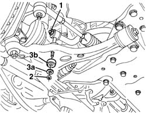
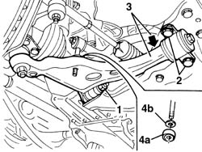
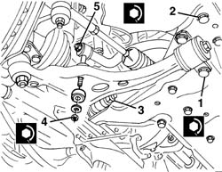

4410D13 FRONT SUSPENSION BEAM - R R
- Path
- Procedures > 44 SUSPENSION AND WHEELS > 4410 FRONT SUSPENSION > 4410D FRAME AND CROSS BEAM > 4410D13 FRONT SUSPENSION BEAM - R R
- Kind
- repair procedure (removal / refitting; the operation number is the code)
- Applies to
- all engines; all production periods
- Interactive page
- https://sloeber94.github.io/elrnDB-fDct/en/#/244001186
Applies to: all engines; all production periods
 Removing
Removing
 Refitting
Refitting- Position the vehicle on the lift.
- Remove the front wheels.
Op. 7055B54 UNDER-ENGINE GUARD - R R
1. Slightly loosen the upper nut fixing the anti-roll bar connecting rod.
2. Undo the lower nut fixing the anti-roll bar connecting rod.
3. Keep the washer (3a) and the bush (3b).

Applies to: all engines; all production periods
- Continue working on both sides of the vehicle.
1. Undo the front bolt for the track control arm.
2. Undo the bolts fixing the rear pin.
3. Gently lower the track control arm.
4. Keep the washer (4a) and the bush (4b).

Applies to: all engines; all production periods
Op. 4410D14 FRONT SUSPENSION CROSSBEAM - R+R WITH WISHBONES REMOVED
Applies to: all engines; all production periods
Refitting
RemovingOp. 4410D14 FRONT SUSPENSION CROSSBEAM - R+R WITH WISHBONES REMOVED
- Place the bushes and the washers in position, then raise the track control arms until they are in the correct position.
1. Tighten the inner bolt fixing the rear pin.
 | Value - daNm | Fastening | Component | Ø |
|---|---|---|---|---|
1 | 17.3 - 25.5 | Inner bolt | FRONT TRACK CONTROL ARM | M16x1.5 |
2. Tighten the outer bolt fixing the rear pin.
| Value - daNm | Fastening | Component | Ø |
|---|---|---|---|---|
1 | 15.6 - 22.5 | Outer bolt | FRONT TRACK CONTROL ARM | M16x1.5 |
3. Tighten the front bolt.
| Value - daNm | Fastening | Component | Ø |
|---|---|---|---|---|
3 | 22.9 - 33.2 | Front bolt | FRONT TRACK CONTROL ARM | M18x1.5 |
4. Position the bush and the washer and tighten the lower connecting rod fixing nut.
| Value - daNm | Fastening | Component | Ø |
|---|---|---|---|---|
4 | 5.1 - 7.4 | Lower nut | ANTI-ROLL BAR CONNECTING ROD | M12x1.25 |
5. Tighten the upper connecting rod fixing nut.
| Value - daNm | Fastening | Component | Ø |
|---|---|---|---|---|
5 | 8.2- 11.9 | Upper nut | ANTI-ROLL BAR CONNECTING ROD | M12x1.25 |

Applies to: all engines; all production periods
Op. 7055B54 UNDER-ENGINE GUARD - R R
- Refit the front wheels.
- Remove the vehicle from the lift.